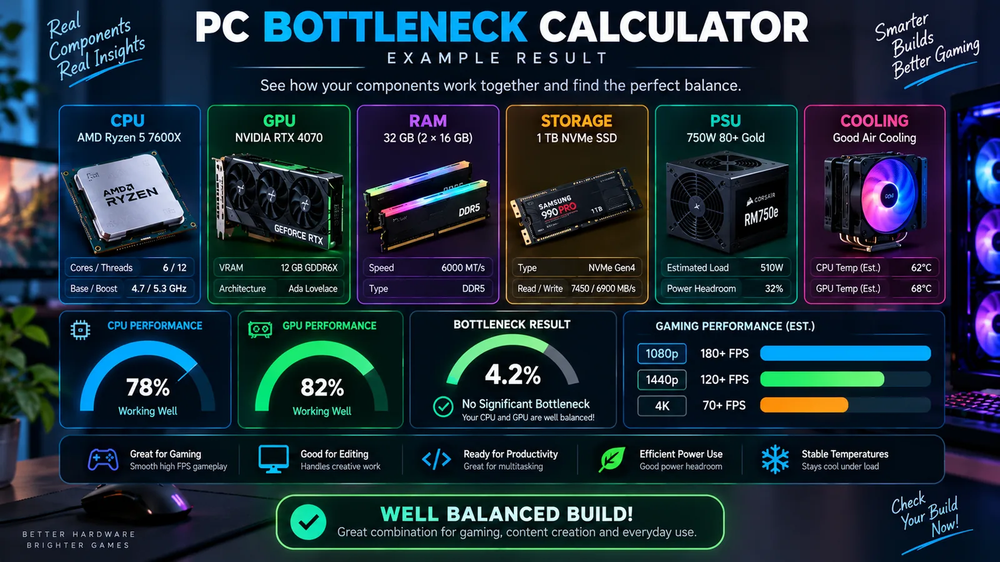
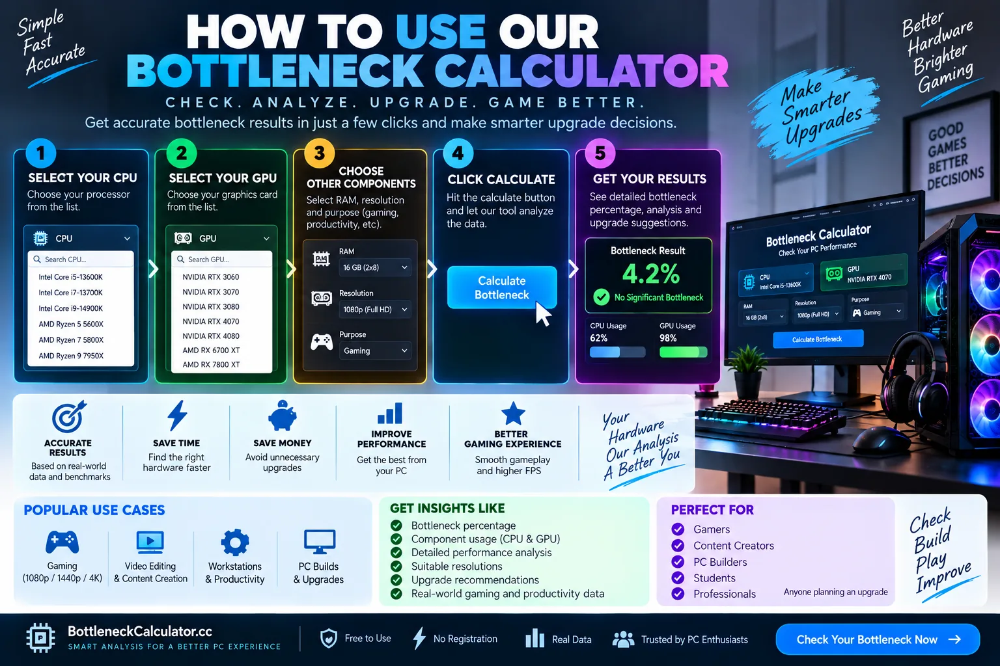

Équilibre CPU–GPU
Estime le composant le plus susceptible de limiter la résolution et la charge de travail sélectionnées.
Comparez les capacités de votre CPU et GPU selon votre charge de travail, résolution et mémoire. Obtenez un rapport pratique sans créer de compte.
Le CPU et le GPU sélectionnés forment une association cohérente pour cet objectif.

Un diagnostic PC utile prend en compte le processeur, la carte graphique et le matériel de soutien qui les entoure.
Estime le composant le plus susceptible de limiter la résolution et la charge de travail sélectionnées.
Vérifiez si votre RAM installée convient au jeu, au travail créatif ou à un usage quotidien.
Découvrez comment votre température maximale affecte l'estimation globale de santé.
Comprenez où la vitesse du disque compte pour le chargement, les mises à jour et la réactivité.
Comparez la demande estimée de la plateforme avec la capacité de l'alimentation sélectionnée.
Transformez plusieurs vérifications en une prochaine étape concrète, plutôt que de viser un simple pourcentage.
Notre calculateur utilise des niveaux relatifs de composants et les ajuste selon la résolution et la charge de travail. Le matériel de soutien est noté séparément afin qu'un composant puissant ne masque pas une autre limitation.
Les choix de CPU et GPU utilisent des valeurs relatives de performance et de puissance pour la comparaison.
Les jeux, le travail créatif et l'usage quotidien sollicitent le matériel différemment.
La RAM, le stockage, la température et la capacité de l'alimentation contribuent au score de santé.
Le rapport met en évidence le scénario limitant et suggère quoi vérifier ensuite.
Un goulot d'étranglement est un composant ou une condition qui limite une charge de travail donnée avant le reste du système. Le composant limitant peut changer selon la résolution, les réglages, le taux d'images et l'application.
Non. Chaque système a un facteur limitant dans une charge de travail donnée. Un léger déséquilibre n'a d'importance que s'il vous empêche d'atteindre l'expérience visée.
Oui. Les résolutions plus élevées augmentent généralement le travail de rendu du GPU, tandis que le jeu en 1080p à taux de rafraîchissement élevé peut solliciter davantage le CPU.
Surveillez l'utilisation du GPU, l'utilisation du CPU par cœur, les fréquences, l'utilisation de la mémoire, les températures et le temps de trame en exécutant le jeu ou l'application qui vous intéresse réellement.
Un goulot d'étranglement PC n'est pas une propriété permanente d'un ordinateur. Le composant qui limite les performances peut changer selon le jeu, l'application, la résolution, les réglages graphiques, l'objectif de fréquence d'images et la charge en arrière-plan. C'est pourquoi une vérification utile doit être considérée comme un point de départ plutôt qu'un pourcentage unique valable pour toutes les situations.

Commencez par sélectionner le processeur et la carte graphique installés dans votre système. Choisissez la résolution à laquelle vous jouez ou travaillez réellement, puis sélectionnez la charge de travail qui correspond le mieux à votre usage. Ajoutez votre capacité de RAM, le type de stockage, la température maximale et la puissance de l'alimentation afin de donner du contexte aux vérifications du matériel de soutien.
Après avoir utilisé le calculateur, reproduisez la charge de travail sur votre PC réel et surveillez l'utilisation du GPU, l'utilisation du CPU par cœur, les fréquences, l'utilisation de la RAM, les températures et le temps de trame. Un GPU qui reste proche de 100 % d'utilisation lors d'un jeu exigeant graphiquement peut se comporter exactement comme prévu. À l'inverse, une faible utilisation du GPU combinée à un ou plusieurs cœurs CPU proches de leur limite peut indiquer une limitation côté CPU. Les saccades peuvent aussi provenir d'une pression sur la RAM, d'un throttling thermique, d'une activité de stockage, des pilotes ou de logiciels en arrière-plan.
La résolution change la quantité de travail effectuée par la carte graphique pour chaque image. En 1080p et à des taux de rafraîchissement très élevés, un GPU rapide peut rendre les images assez vite pour que le CPU devienne le facteur limitant. Passer en 1440p ou 4K augmente généralement la charge du GPU et peut modifier l'équilibre. C'est pourquoi une association CPU/GPU doit toujours être évaluée dans le contexte de l'écran et des réglages que vous comptez utiliser.
Cet outil utilise des valeurs relatives de composants et des ajustements de charge de travail plutôt qu'une base de données de FPS mesurés pour chaque jeu. Il ne peut pas reproduire chaque version de pilote, moteur de jeu, réglage BIOS, condition de refroidissement ou processus en arrière-plan. Utilisez le rapport pour identifier ce qui mérite d'être testé, puis confirmez les décisions importantes avec des tests actuels et des benchmarks réels.